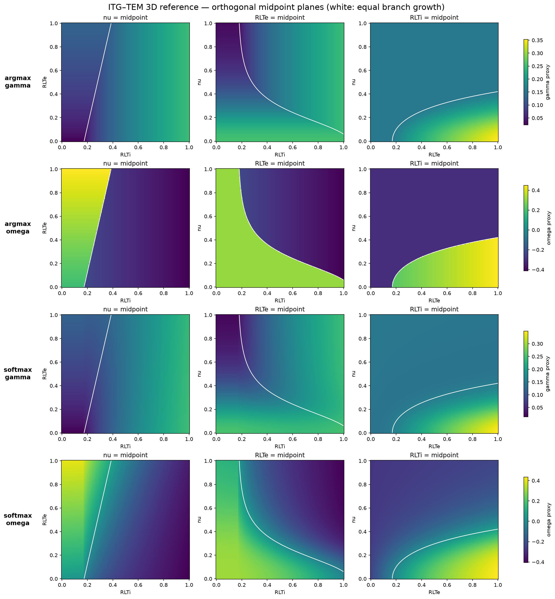
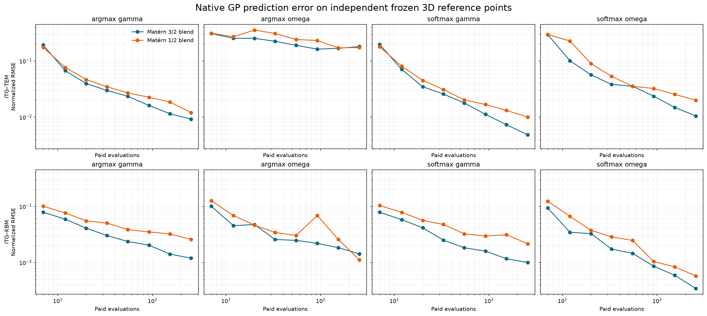
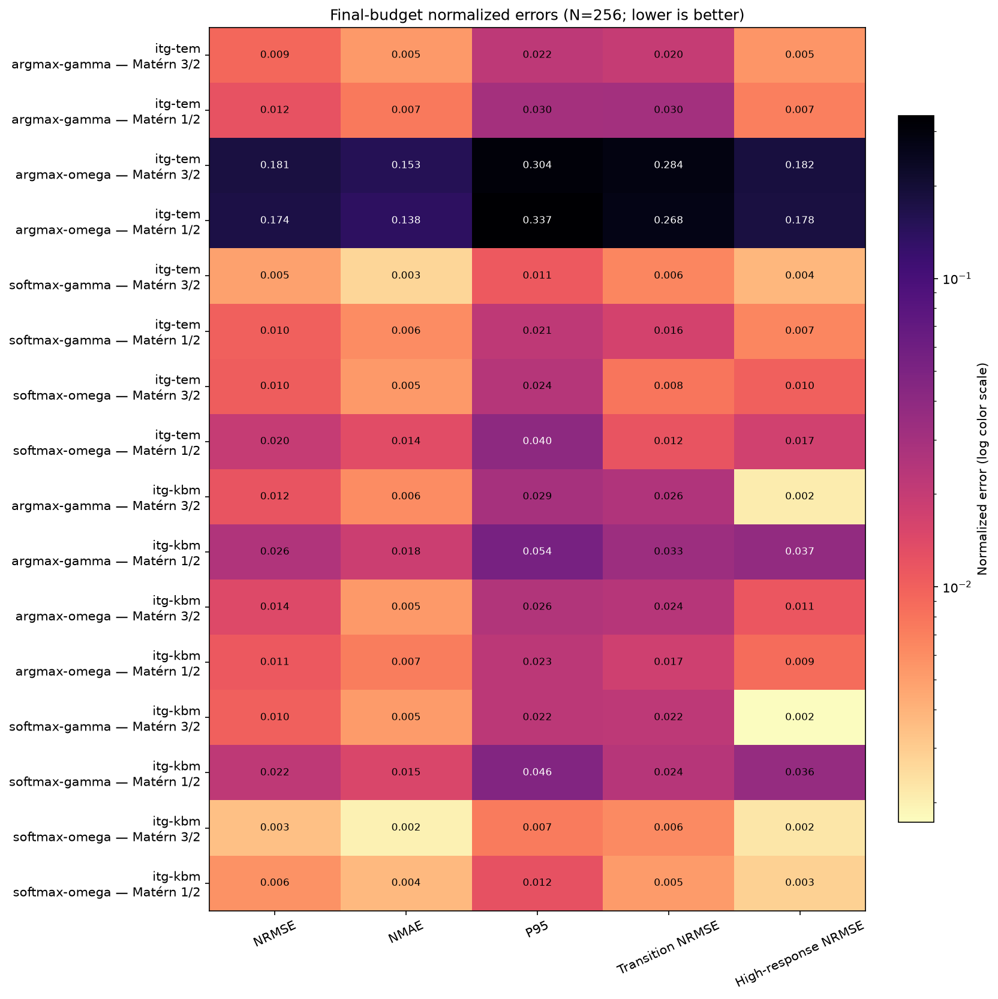

ITG–KBM reference slices

These are declared 3D slices of the unchanged native 6D phenomenological formulas. White contours mark equal branch growth. Scores use each GP native predictor on independent frozen reference points and are separate from the 2D Delaunay leaderboard.



| Case | Model | NRMSE | NMAE | P95 | Transition NRMSE | High-response NRMSE |
|---|---|---|---|---|---|---|
| ionut-itg-tem-3d-argmax-gamma | Matérn 3/2 blend | 0.00920 | 0.00527 | 0.02183 | 0.01959 | 0.00548 |
| ionut-itg-tem-3d-argmax-gamma | Matérn 1/2 blend | 0.01203 | 0.00749 | 0.02959 | 0.03036 | 0.00706 |
| ionut-itg-tem-3d-argmax-omega | Matérn 3/2 blend | 0.18105 | 0.15337 | 0.30362 | 0.28376 | 0.18201 |
| ionut-itg-tem-3d-argmax-omega | Matérn 1/2 blend | 0.17389 | 0.13783 | 0.33651 | 0.26848 | 0.17791 |
| ionut-itg-tem-3d-softmax-gamma | Matérn 3/2 blend | 0.00485 | 0.00266 | 0.01097 | 0.00645 | 0.00384 |
| ionut-itg-tem-3d-softmax-gamma | Matérn 1/2 blend | 0.01002 | 0.00618 | 0.02147 | 0.01646 | 0.00656 |
| ionut-itg-tem-3d-softmax-omega | Matérn 3/2 blend | 0.01049 | 0.00530 | 0.02440 | 0.00779 | 0.00997 |
| ionut-itg-tem-3d-softmax-omega | Matérn 1/2 blend | 0.01996 | 0.01351 | 0.03994 | 0.01193 | 0.01698 |
| ionut-itg-kbm-3d-argmax-gamma | Matérn 3/2 blend | 0.01192 | 0.00606 | 0.02899 | 0.02597 | 0.00210 |
| ionut-itg-kbm-3d-argmax-gamma | Matérn 1/2 blend | 0.02587 | 0.01809 | 0.05375 | 0.03280 | 0.03736 |
| ionut-itg-kbm-3d-argmax-omega | Matérn 3/2 blend | 0.01424 | 0.00531 | 0.02555 | 0.02394 | 0.01144 |
| ionut-itg-kbm-3d-argmax-omega | Matérn 1/2 blend | 0.01113 | 0.00715 | 0.02253 | 0.01743 | 0.00859 |
| ionut-itg-kbm-3d-softmax-gamma | Matérn 3/2 blend | 0.01001 | 0.00520 | 0.02247 | 0.02205 | 0.00172 |
| ionut-itg-kbm-3d-softmax-gamma | Matérn 1/2 blend | 0.02161 | 0.01509 | 0.04566 | 0.02404 | 0.03571 |
| ionut-itg-kbm-3d-softmax-omega | Matérn 3/2 blend | 0.00343 | 0.00196 | 0.00739 | 0.00627 | 0.00223 |
| ionut-itg-kbm-3d-softmax-omega | Matérn 1/2 blend | 0.00577 | 0.00374 | 0.01232 | 0.00519 | 0.00288 |